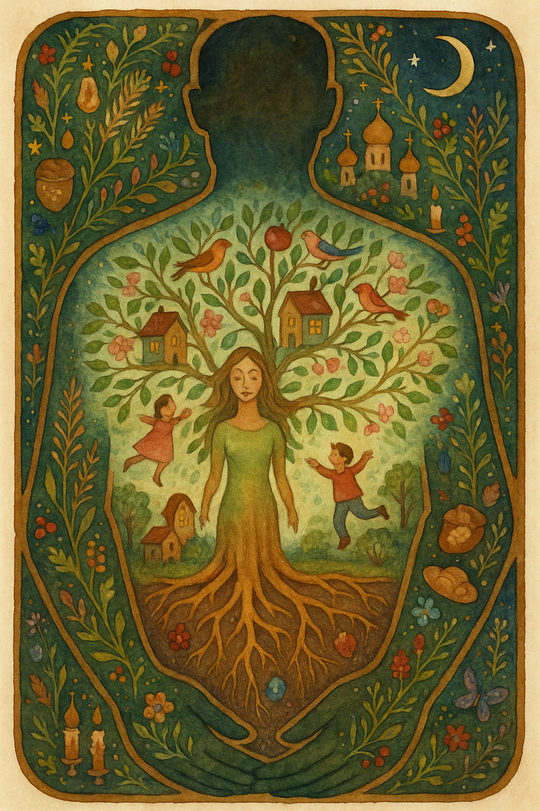

Metaphorical card in dreamy watercolor illustration style, NO TEXT anywhere. The entire border/frame of the card IS the silhouette of a man — his broad shoulders form the top arch, his arms form the sides, his hands meet at the bottom creating a protective enclosure. He is the frame, the structure, the safe space. INSIDE this masculine silhouette-frame: a serene woman as a living tree — her body is the trunk, hair flowing upward into branches full of leaves, blossoms, birds, fruit. Golden roots reaching deep into earth with hidden flowers and gems. Small cozy houses with lit windows in the branches — future generations. Children playing among roots and branches. The man-frame is filled with dense intricate details: vines, wheat, church domes, stars, crescent moon, candles, bread, icons, butterflies, berries, wildflowers — all woven into his silhouette like an ornamental border. Rich saturated palette: deep greens, warm golds, burgundy, terracotta, midnight blue, soft rose. Center lighter and ethereal, border dense and jewel-like. Feeling: he holds the space, she fills it with life. Divine order — husband as structure, wife as living spirit within. Style: whimsical detailed watercolor like Russian metaphorical cards Письма к себе, painterly, naive but complex, warm, magical. No text or letters.
{kind=link}